12
Supporting Virtuoso RF
This chapter contains the following sections.
- Supporting Curved Paths
- Creating a Packaging Wire
- Stretching a Curved Path
- Curved Path Snapping Behavior in Packaging Wire
- Tapping of Curved Paths
- Creating a Packaging Bus
- Snapping Behavior of Curved Paths Using Create Packaging Bus
- Supporting Package Constraints
- Area-based Rules in Create Package Wire
- Area-based Rules in Create Packaging Bus
- Push and Shove in Interactive Routing
Supporting Curved Paths
In Virtuoso RF packages, a shape is called a curved path. The curved path has round edges and lets you route on any angle similar to a path. In addition, it lets you use the context-sensitive menu to change the layers of wires.
Interactive routing has been enhanced to support curved paths that are available in cellviews along with package constraints. The bindkeys that are used for the Create Wire and Create Bus commands are defined to create a curved path when you have a design with package. The VRF package definitions are stored either in the technology database or the design database.
However, there is a difference from the usual behavior of the Create Wire and Create Bus commands.
-
The bindkeys and the menu options starts the Create Packaging Wire and the Create Packaging Bus commands instead of the Create Wire and Create Bus commands.
The Create Packaging wire form starts when the fabric type is specified asboard,module, orpackage, in the technology file. -
The Create Packaging Wire and Create Packaging Bus commands automatically creates curved paths with round edges.
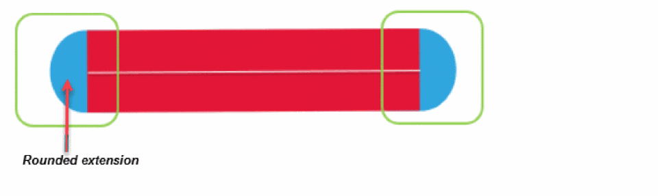 -
The curved path supports any angle.
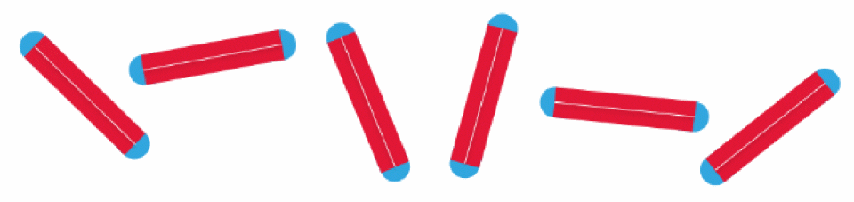
The Create Packaging wire form starts the wire option (bindkey p) for fabric type as board/module/package. The Create Packaging Bus form starts the bus option (bindkey Ctrl+Shift+X).
While interactive routing, you can create a curved path by using the Create Packaging Wire and Create Packaging Bus commands. You can start creating a curved path from:
- an empty space
- circular padstack (pin)
- an end of an existing curved path
- rounded vias
- instance term
- TLIP pcell
- bond finger
Creating a Packaging Wire
-
Choose Create – Wiring – Packaging Wire and press
F3. Alternatively, use the bindkeyPto start the Create Packaging Wire command and then pressF3. You can also click the Create Wire icon on the Create toolbar.
The Create Packaging Wire form opens. You can set the parameters in this form to create a curved path.
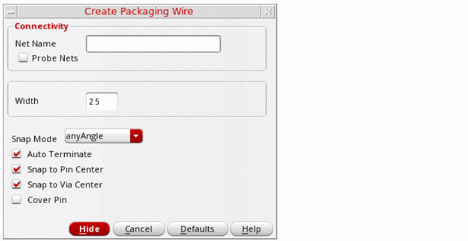 -
In the Net Name field, specify a net name for the curved path.
The curved path being created is assigned to the specified net. If the specified net does not exist in the design, the net is created. - To change the width of the curved path, specify the desired width in the Width field. The default width displayed in the Width field is determined from the package technology file.
- Select Justification to control the direction along which to offset the curved path from the digitized points of the path.
-
Choose a value from the Snap Mode cyclic field. Two additional snap modes are available when editing a cellview with a packaging fabric: L45LongFirst and L45AngleFirst. If set to L45LongFirst or L45AngleFirst, two paths are created with a single click, but with a 45 degrees angle between them.
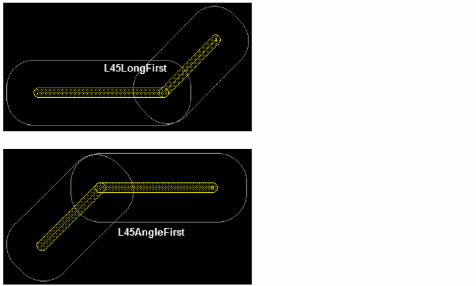 - Specify if you want the curved path to snap to the center of a pin. This option is selected by default. In case, the Snap to Pin Center option is deselected, then the curved path can end-up with an invalid connection.
- Select Auto Terminate while creating a curved path for terminating the path with a single click. This option is selected by default.
- Specify if you want the curved path to snap to the center of a via. This option is selected by default.
- Select Cover Pin to automatically cover the source and target pins and adjust the curved path.
-
To finish creating the curved path, double-click or press
Enter.
Inserting Via and Changing Layer
While creating a curved path, you can change the layer by dropping a via or a padstack. To change the layer, perform the following steps:
I) Use the Via Down to <layer name> and Via Up to <layer name> commands on the Create Single Wire context-sensitive menu when the Create Packaging Wire command is active:
- Start the Create Wire command.
- Start creating the curved path by digitizing the points.
- Right-click to select Via Upto <layer name> or Via Down to <layer name> to change the wire layer to a higher or lower layer, respectively.
- Continue digitizing points on the new layer.
-
Complete the command by pressing
EscorEnter.
The following figure shows a via inserted betweenL01andL02.
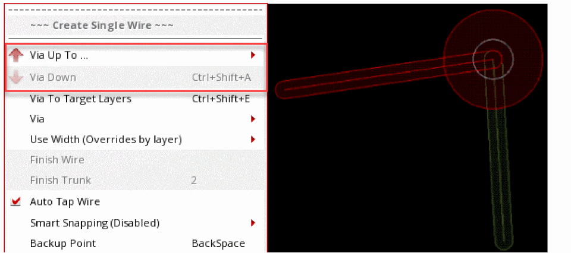
II) By using the Select Via command on the Create Single Wire context-sensitive menu
The Select Via command lets you add padstacks. Padstacks have more than two accessible layers. The padstack support lets you leave a padstack from an intermediate layer.
- Start the Create Wire command.
- Start creating the curved path by digitizing the points.
-
Right-click to select Select Via or press the
Spacebarkey.
The Select Via form appears. -
Select a layer to which you want to create a padstack. The following figure displays a padstack between
L01toL04.
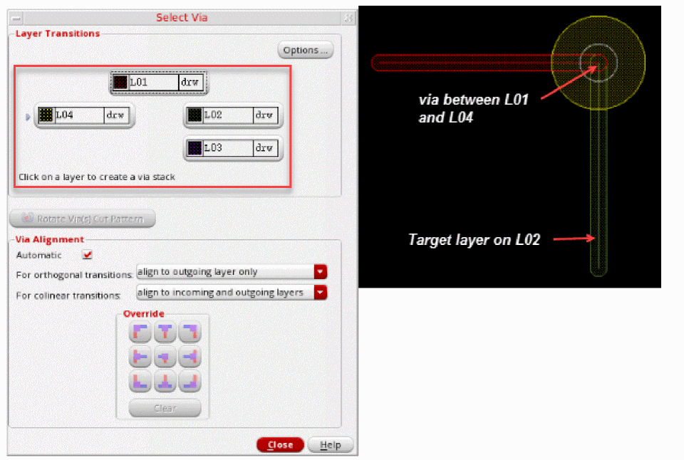
Stretching a Curved Path
When stretching a curved path, the connection of the curved path is maintained when the, Keep wires connected to shapes, option is selected in the Stretch form.
Automatic Snapping Using Stretch
While stretching a packaging wire, you can automatically snap a wire to the center of the destination pin, via, instance pin, or bondfinger. In addition, you can automatically snap a wire to the centerline or the start and end of the path. The automatic snapping to the center of object or the path helps create a DRC connection correctly without any invalid connections.
Automatic snapping ignores the connectivity as well as the metal layer of the destination object, except in case of conflict. In case of conflict, it uses the information to resolve a conflict, if any.
To automatically snap a packaging wire:
- Choose Options – Editor. The Layout Editor Options form appears.
-
Select the Gravity On option to ensure that snapping to objects is enabled.
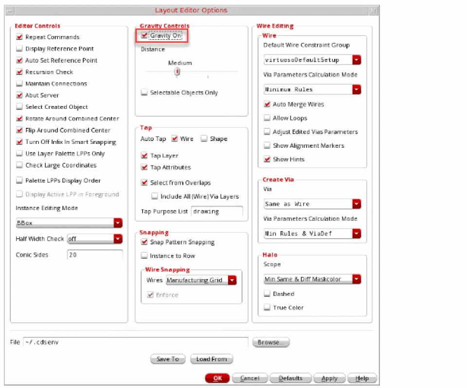 -
Choose Edit – Stretch and press
F3. The Stretch form displays. - (Optional) Click Lock Angle to select or deselect it. The use of lock angle allows the stretch to keep the bends as they are. When the Lock Angle option is selected, snapping slides the bend to allow the wire to snap.
- Choose a value from the Snap Mode field. The supported snap modes are anyAngle, diagonal, and orthogonal.
-
Select the packaging wire that you want to stretch. You can either partially or fully select the wire.
When you fully select the wire, the Stretch command works similar to the Move command and the whole path is moved, as shown in the following figure.
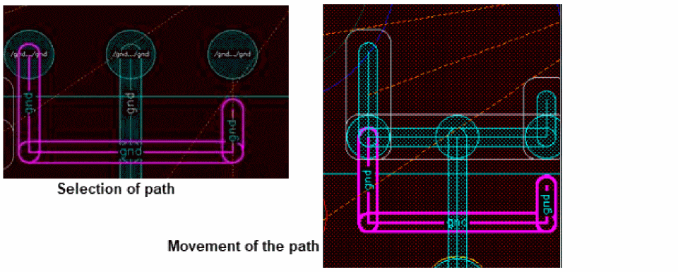When the wire is partially selected, the snapping does not add paths to the stretched wire. The path adjusts the bend location to preserve the direction and angles to avoid DRC violations.
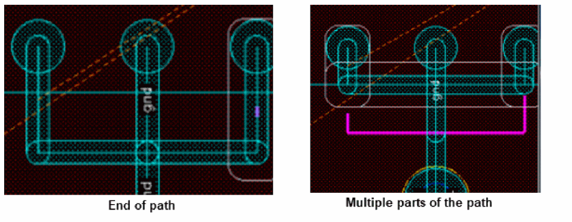You can also snap multiple wires to destination objects at the same time by selecting multiple wires and overlapping them over the destination objects, as shown in the following figure.
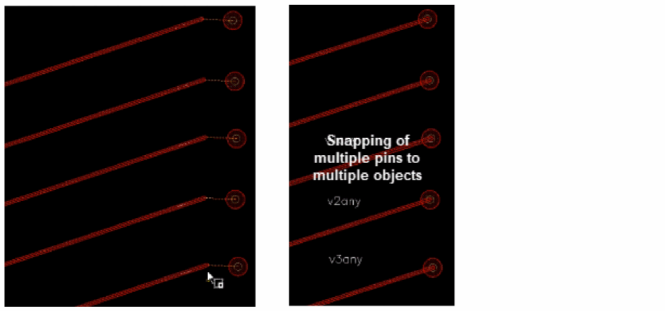
Curved Path Snapping Behavior in Packaging Wire
When you start creating a curved path from an existing object, such as a ball grid array pin, TLIP, via, and bondfinger, the curved path snaps to the center of the object. The following examples illustrate how a curved path snaps to the center of an object.
-
Snapping to a Ball Grid Array Pin
When the Snap to Pin Center is selected, then curved path snaps to the center of source and destination pin. However, if the option is deselected, then the curved path starts from the first point of click on pin.
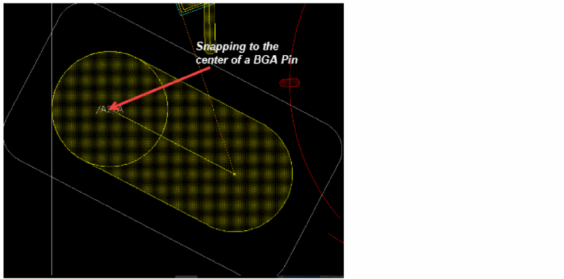 -
Snapping to Pad
Support of instances used as pads has been added in interactive routing, notably in smart snapping and in the flightlines engine.
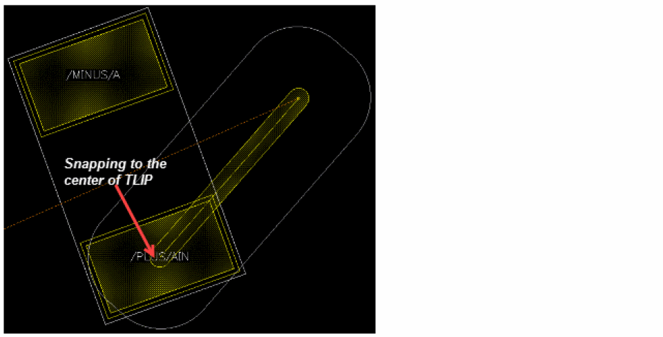 -
Snapping to a Bond Finger
When Snap to Pin Center is selected, the curved path snaps to the center of the bond finger. However, if the option is deselected, then the curved path starts from the first point of click on the bond finger.
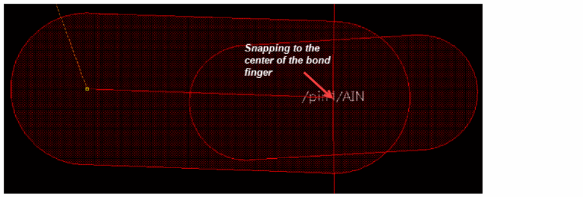The bond finger also supports smart snapping for the curved path. In this case, the curved path is snapped to the edge of the bond finger. In addition, it also inherits the width of the bond finger.
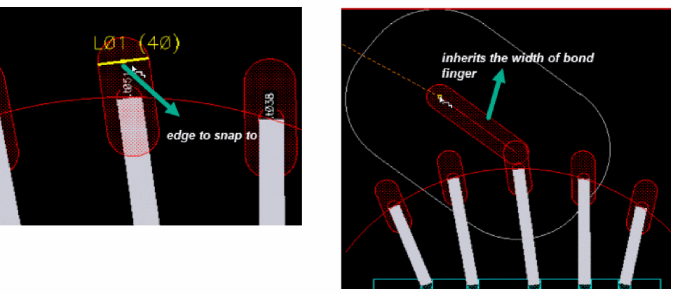 -
Snapping from a Padstack Via
When the Snap to Via Center option is selected, the curved path snaps to the center of a via. However, if the option is deselected, then the curved path starts from the first point of click on the via.
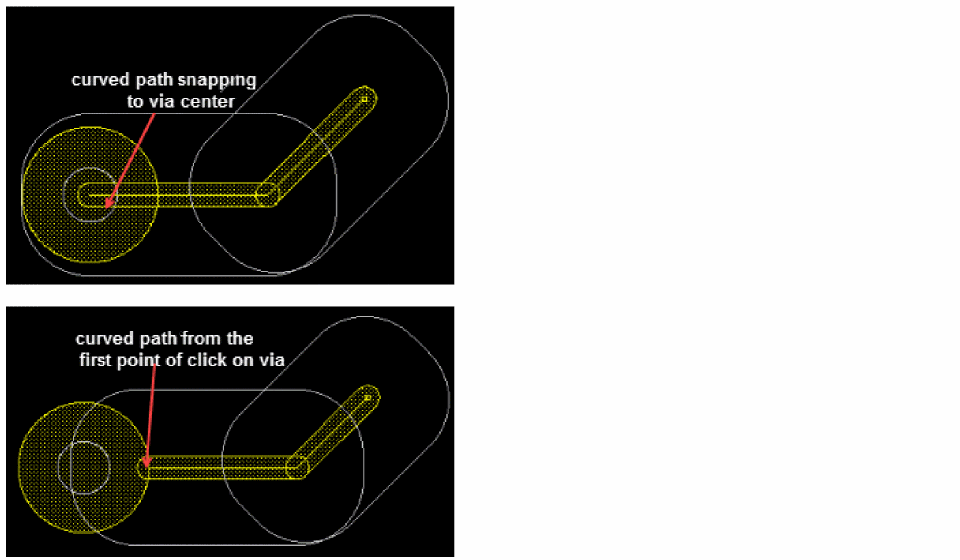
Tapping of Curved Paths
The tapping behavior of a curved path is dependent on the Auto Tap Wire option in the Create Single Wire context-sensitive menu. If the Auto Tap Wire option is selected, the curved path automatically taps to the metal layer of the object on which the pointer is placed. Also, it inherits the width of the starting object.
The following figure shows the tapping behavior of a curved path.
Creating a Packaging Bus
-
Use one of the following methods to open the Create Package Bus form:
-
Choose Create – Wiring – Packaging Bus and press
F3. -
Use the bindkey
Ctrl+Shift+Xto start the Create Packaging Bus command and then pressF3. - Click the Create Bus button 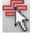 on the Create toolbar.
The Create Packaging Bus form opens. You can set the parameters in this form to create a curved path.
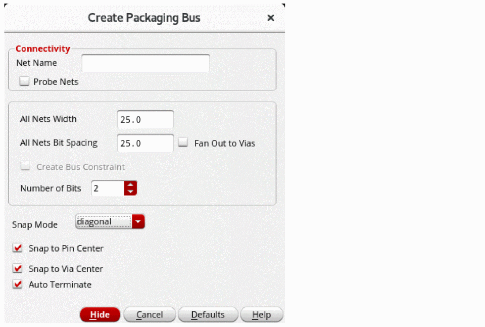 -
Choose Create – Wiring – Packaging Bus and press
- From the Layers assistant, select a layer on which you want to create the packaging bus.
- To start creating a packaging bus in an empty space in the design display area:
-
To create a packaging bus that has connectivity in the empty space in the design display area:
- In the Create Packaging Bus form, specify the list of net names separated by commas or spaces in the Net Name field. The curved paths that are created are assigned to the specified net. If the specified nets do not exist in the design, they are created.
- Click at a point in the design display area to digitize the bus.
- Continue to digitize the bus and create bends.
-
Press
Enterto finish creating the packaging bus.
-
To start creating a packaging bus from existing pins, use one of the following methods to select multiple pins:
-
Selecting Multiple Pins
When you area-select multiple pins that are on the same layer but different nets, the pin nets are used for creating the packaging bus wires; the pin nets are populated in the Net Name field in the Create Packaging Bus form. -
Adding Pins to the Selection
Select a single pin andShift+ click to add additional pins to the selection.
In both the above methods, you can use theCtrlandShiftkeys to remove objects from the selection. The pin is removed only from the picked set; the originally selected set remains intact. You can use theCtrlandShiftkeys only before the first digitized point. To modify the selected set after the first point is digitized, pressEsc. -
Adding Instance Terminals
When you select an instance terminal, the wire editor tries to find if there are qualify terminals from other instances that can be used for the bus. The create packaging bus selects all the qualifying terminals from either the horizontal or vertical instances depending on which has more qualified terminals. Following are the qualify terminals:- The instance master of the qualifying terminal must be the same as the instance master of the picking terminal.
- The qualifying terminal must be the same terminal on the qualifying instance as the picked terminals on the instance.
- The qualifying terminal must intersect with either horizontal or vertical extent regions of the picked terminal.
The packaging bus wires start at pin centers. -
Adding vias at the start of a bus
When you select a pin to start a packaging bus on a layer that is other than the pin layer, a via is automatically dropped.-
Select a layer in the Palette. For example,
M1. - Choose Create – Wiring – Packaging Bus.
-
Holding the
Ctrlkey, area select the pins that are on a layer other than the layer selected in Layers palette. Vias are dropped at the center of each pin. You can also drop a via at the start of a bus by selecting a single pin usingCtrl+ click.
To remove a pin from the selection, hold theCtrlkey and area select the pin that you want to remove from the selection. If you want to add the pin to the selection, hold theShiftkey and area select the pin that you want to add.
-
Select a layer in the Palette. For example,
-
Selecting Multiple Pins
-
Right-click to display the Edit Bus Form.
If required, choose Cycle Control Wire from the context-sensitive menu to switch the control wire function to one of the extreme wires or the center wire of the packaging bus. For information about control wires, see Using the Control Wire. -
You can change width and spacing overrides at any time while creating or reshaping a bus. If you select the Default Constraints option from the Use Spacing menu, then the spacing after the bend is the
minSpacing. The default width is based on theminWidthand the default spacing value is based on theminSpacingconstraint for each layer that can be used for routing. -
Select Gather/Spread from the Use Spacing menu of the Edit Bus Form to gather or spread packaging bus wires before the first bend of wires.
If you select Gather/Spread Bus, the packaging bus wires are surrounded by a dotted box called the bus cursor. Individual wires are gathered or spread inside this box, which can be moved to any desired location. Jogs are added and the wires are gathered to the minimum spacing rule or specified spacing value. The command on the context-sensitive menu toggles to Cancel Gather/Spread.
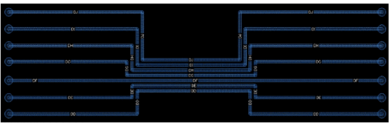If you select Gather/Spread Bus repeatedly and one of the times no gather action is performed because the Bit Spacing field in the form is not modified, then the Create Packaging Bus command restores the wire spacing that was used before the previous gather operation. For example, if you start creating a packaging bus from pins that are non-uniformly spaced and Bit Spacing is0, and select Gather/Spread Bus from the Create Bus context-sensitive menu, the wires are gathered tominSpacing. Click and drag to pass the obstruction. If you select Gather/Spread Bus again without changing the Bit Spacing value, the Create Packaging Bus command restores the spacing that was used before the previous spacing, that is, the pin spacing will be restored.
When routing a bus, each time you move the pointer, the locations of the last pathSeg leading up the pointer are computed. If you select Cancel Gather/Spread Wires and the wires are not fanned out to a via pattern, only one segment leads to the pointer for each wire. If you select Gather/Spread Bus, jogs are added to the pathSegs to bring them closer together if they are spaced farther than the minimum spacing.
PressingBackspaceremoves the jogs and the wires are not gathered or spread. -
To change the spacing between multiple wires, specify the new spacing value in the All Nets Bit Spacing field.
The spacing is updated from the last digitized point. -
If required, change the bus wire width in the All Nets Width field in the Create Packaging Bus form or select the appropriate option from the Use Width menu on the Edit Bus Form.
The width is updated from the last digitized point. -
To remove the last segment of a wire, use
Backspace.
Bus editing supports Undo, Redo, andBackspace. - To change layers and add vias or to fan vias out to connect to the vias, see Changing Layers and Selecting Vias.
-
You can finish creating the packaging bus at any point by double clicking or by pressing
Enter. The packaging bus ends at the pointer location.
-
Right-click to display the Edit Bus Form.
If required, choose Cycle Control Wire from the context-sensitive menu to switch the control wire function to one of the extreme wires or the center wire of the packaging bus. For information about control wires, see Using the Control Wire. -
You can change width and spacing overrides at any time while creating or reshaping a bus. If you select the Default Constraints option from the Use Spacing menu, then the spacing after the bend is the
minSpacing. The default width is based on theminWidthand the default spacing value is based on theminSpacingconstraint for each layer that can be used for routing. -
Select Gather/Spread from the Use Spacing menu of the Edit Bus Form to gather or spread packaging bus wires before the first bend of wires.
If you select Gather/Spread Bus, the packaging bus wires are surrounded by a dotted box called the bus cursor. Individual wires are gathered or spread inside this box, which can be moved to any desired location. Jogs are added and the wires are gathered to the minimum spacing rule or specified spacing value. The command on the context-sensitive menu toggles to Cancel Gather/Spread.
If you select Gather/Spread Bus repeatedly and one of the times no gather action is performed because the Bit Spacing field in the form is not modified, then the Create Packaging Bus command restores the wire spacing that was used before the previous gather operation. For example, if you start creating a packaging bus from pins that are non-uniformly spaced and Bit Spacing is0, and select Gather/Spread Bus from the Create Bus context-sensitive menu, the wires are gathered tominSpacing. Click and drag to pass the obstruction. If you select Gather/Spread Bus again without changing the Bit Spacing value, the Create Packaging Bus command restores the spacing that was used before the previous spacing, that is, the pin spacing will be restored.
When routing a bus, each time you move the pointer, the locations of the last pathSeg leading up the pointer are computed. If you select Cancel Gather/Spread Wires and the wires are not fanned out to a via pattern, only one segment leads to the pointer for each wire. If you select Gather/Spread Bus, jogs are added to the pathSegs to bring them closer together if they are spaced farther than the minimum spacing.
PressingBackspaceremoves the jogs and the wires are not gathered or spread. -
To change the spacing between multiple wires, specify the new spacing value in the All Nets Bit Spacing field.
The spacing is updated from the last digitized point. -
If required, change the bus wire width in the All Nets Width field in the Create Packaging Bus form or select the appropriate option from the Use Width menu on the Edit Bus Form.
The width is updated from the last digitized point. -
To remove the last segment of a wire, use
Backspace.
Bus editing supports Undo, Redo, andBackspace. - To change layers and add vias or to fan vias out to connect to the vias, see Changing Layers and Selecting Vias.
-
You can finish creating the packaging bus at any point by double clicking or by pressing
Enter. The packaging bus ends at the pointer location.
You can check the connectivity of the packaging bus by using the Edit Curved Path Properties form or the Property Editor assistant.
Related Topics
Area-based Rules in Create Packaging Bus
Snapping Behavior of Curved Paths Using Create Packaging Bus
Snapping Behavior of Curved Paths Using Create Packaging Bus
When you start creating a curved path from an existing object, such as a ball-grid array pin, TILP, via, or bond finger, the curved path snaps to the center of the object. The Snap to Pin Center and Snap to Via Center options in the Create Packaging Bus form are enabled, by default.
The following examples illustrate how a curved path snaps to the center of an object using Create Packaging Bus.
-
Snapping to a Ball Grid Array Pin
When the Snap to Pin Center option is selected, the curved path snaps to the center of source and destination pin. However, if the option is deselected, then the curved path starts from the first point of click on pin.
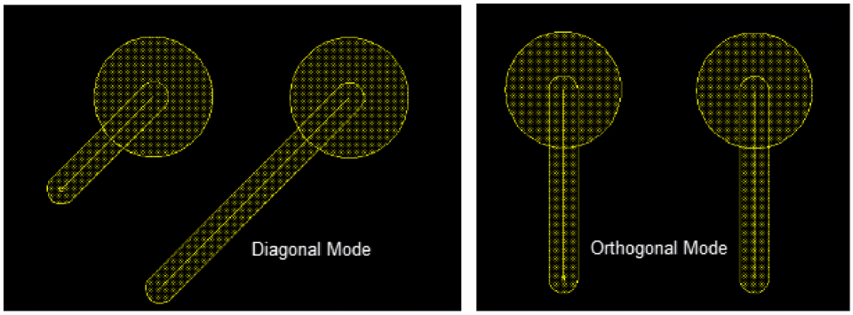 -
Snapping to a Pad
Support of instances used as pads has been added for the Create Packaging Bus command, notably in smart snapping and in the flightlines engine.
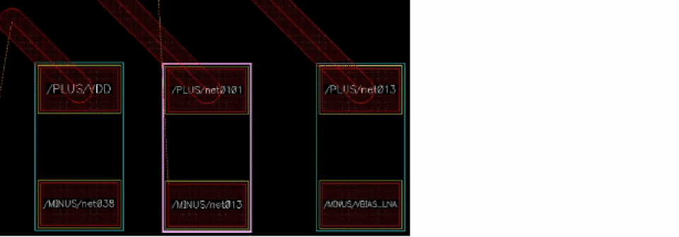 -
Snapping to a Bond Finger
When Snap to Pin Center is selected, the curved path snaps to the center of the bond finger. However, if the option is deselected, then the curved path starts from the first point of click on the bond finger.
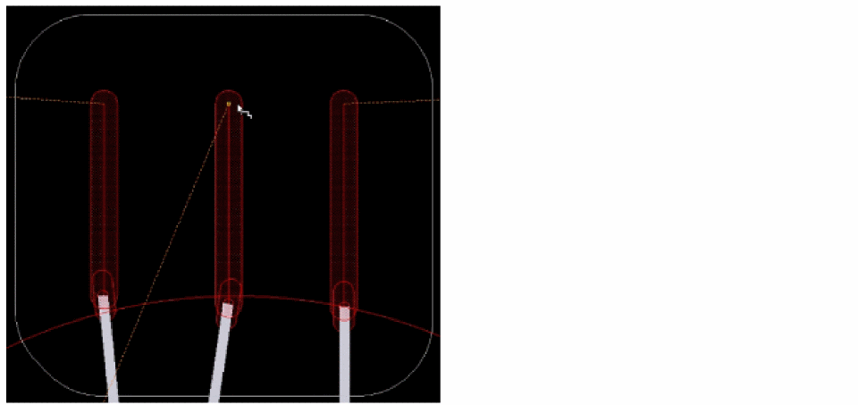 -
Snapping from a Padstack Via
When the Snap to Via Center option is selected, the curved path snaps to the center of a via. However, if the option is deselected, then the curved path starts from the first point of click on the via.
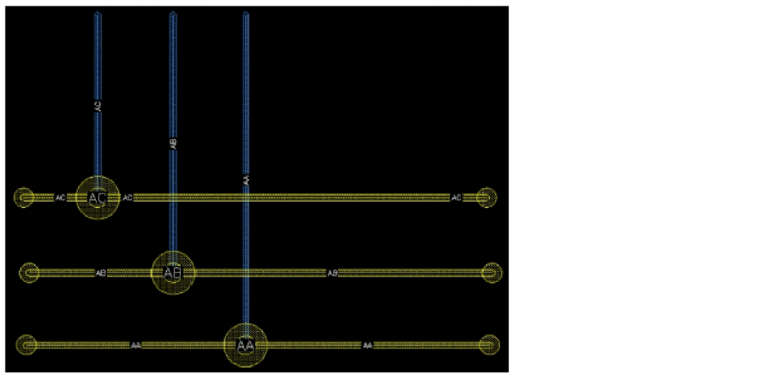
Related Topics
Area-based Rules in Create Packaging Bus
Supporting Package Constraints
When the associated technology is a packaging technology, interactive routing supports the following three package constraints instead of the usual spacing and width constraints.
-
pkgMaxLineWidth
Specifies the maximum line width for traces in a package design. -
pkgMinLineWidth
Specifies the minimum line width for traces in a package design. -
pkgMinSpacing
Specifies the minimum spacing between shapes of the specified object types on the specified layer for advanced package designs.
Area-based Rules in Create Package Wire
For Virtuoso RF, interactive routing supports the following area-based rules:
For more information, see Support for Area-based Rules.
minWidth
The following figure shows an example of a geometric wire in two regions. It shows that when the geometric wire spans across regions, it adjusts the width of the geometric wire based on the minWidth value of the spanned regions.
maxWidth
In case of maxWidth, when the geometric wire spans across regions, it adjusts the width of the geometric wire based on the maxWidth value defined for a region.
minSpacing
The following figure shows how different minSpacing values are defined for two regions.
Area-based Rules in Create Packaging Bus
The Create Packaging Bus command supports the minWidth and minSpacing area-based rules.
minWidth
In the following figure, you see how the bus spans across regions adjusting the width of the bus based on the minWidth value of the spanned regions.
maxWidth
In case of maxWidth, when the packaging bus spans across regions, it adjusts the width of the bus based on the maxWidth value of the spanned regions.
minSpacing
The following figure shows how different minSpacing values are defined for two regions for the Create Packaging Bus command.
Related Topics
Snapping Behavior of Curved Paths Using Create Packaging Bus
Push and Shove in Interactive Routing
The push-and-shove feature applies to routing objects, such as wires and vias. Static objects, such as pins, bumps, and bond fingers, are not considered routing objects. This capability lets you push wires out of the way by either automatically adjusting the new wire or by pushing an existing wire.
Enabling this feature enhances correct-by-construction design and makes the design DRC-and shorts-aware.
In interactive routing, the push-and-shove feature is available for the Create Wire and the Stretch commands. The push-and-shove feature also supports area-based rules and shielding constraints.
- Using Push and Shove while Creating a Wire
- Using Push and Shove while Stretching a Wire
- Support for Area-based Rules in the Push-and-Shove Feature
- Support for Shielding Constraints in the Push-and-Shove Feature
Using Push and Shove while Creating a Wire
While creating a wire, you can use the push-and-shove options to reroute a wire to be DRC correct.
To use the push-and-shove options while creating a wire:
- Choose Create – Wiring – Wire.
-
Press
F3to open the Create Wire form.
The Create Packaging Wire form appears. - In the Net Name field, specify a net name to assign connectivity to the wire. The push-and-shove feature does not work on wires that do not have connectivity.
- Select a value from the Snap Mode cyclic field. If set to orthogonal or diagonal, you can select to create orthogonal or diagonal wires. The other supported push-and-shove snap modes are anyAngle, L45LongFirst, and L45AngleFirst.
- Digitize points where you want to create the wire.
- Right-click the wire that is being created and point to the Push and Shove option in the Create Single Wire context-sensitive menu.
-
Select one of the two push-and-shove modes to enable the feature. By default, the push-and-shove mode is Off.
-
Hug Only: The wire that is being created is rerouted around the existing shapes and considers the
minSpacingvalues set between itself and the existing shapes. This mode avoids other shapes.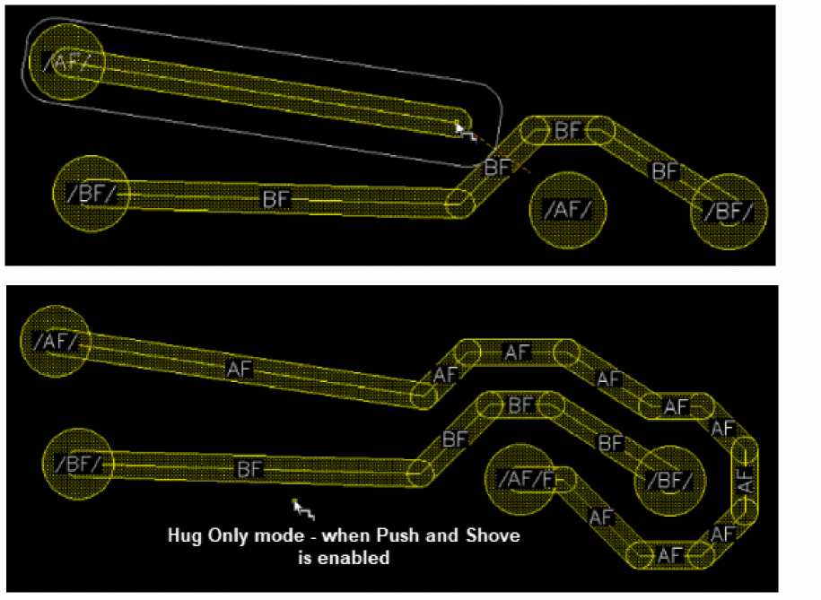 -
Push Wires Only: The wire that is being created pushes the existing non-static shapes, such as wires, or is rerouted around the static existing shapes, such as pins. The edited wire considers the
minSpacingvalues set between itself and the other existing shapes.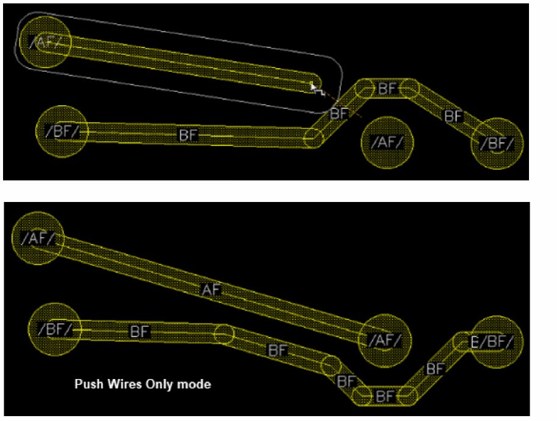 -
Push Wires and Vias: existing wires and vias are pushed to avoid violations with the edited wire.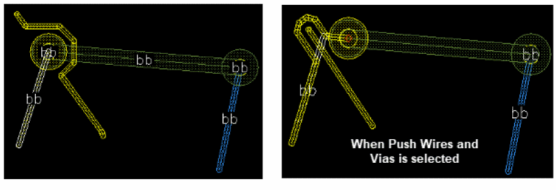
-
Hug Only: The wire that is being created is rerouted around the existing shapes and considers the
-
Click Smooth Wires to remove unnecessary jogs and loops that might be created while pushing the wire.
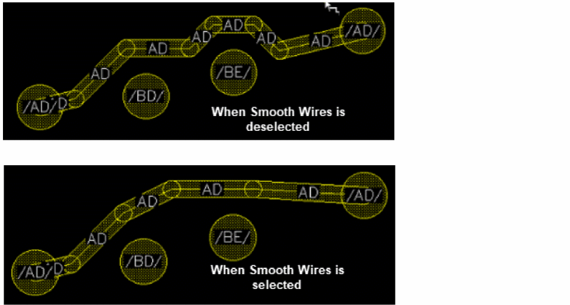 -
Choose Show Remaining Violations to view the violations that might be introduced while rerouting a wire. This option is selected by default.
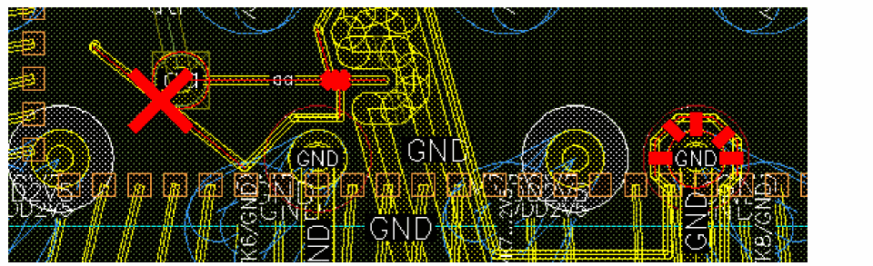
Using Push and Shove while Stretching a Wire
When stretching a wire, you can use the push-and-shove options to reroute a wire and fix the violations.
To use the push-and-shove options while stretching a wire:
- Choose Edit – Stretch.
-
Press
F3to open the Stretch form.
The Stretch form is displayed. -
Select the desired Snap Mode.
The Snap Mode enforces restrictions on the movement of the pointer. For example, if one end of a diagonal segment in a wire is stretched when the snap mode is horizontal, it moves only horizontally. - (Optional) Select Keep Wires Connected to shapes to maintain the wire-to-wire and wire-to-via connections while stretching.
- Click or area select the wire or portion of wire that you want to stretch.
-
Right-click the wire that is being stretched and point to the Push and Shove option in the Stretch context-sensitive menu. There is only a single push-and-shove mode available for the Stretch command, which is enabled by default. The existing wires are pushed to create space for the edited wire.
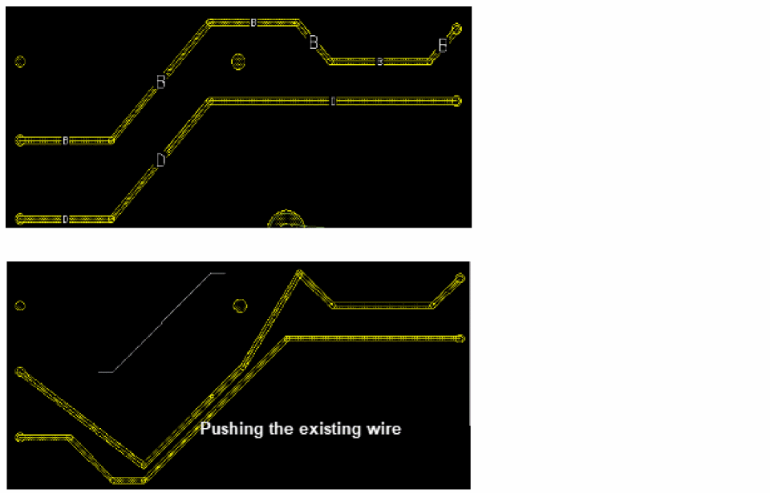The Push Wires and Vias option pushes existing wires and vias to avoid violations with the edited wire.
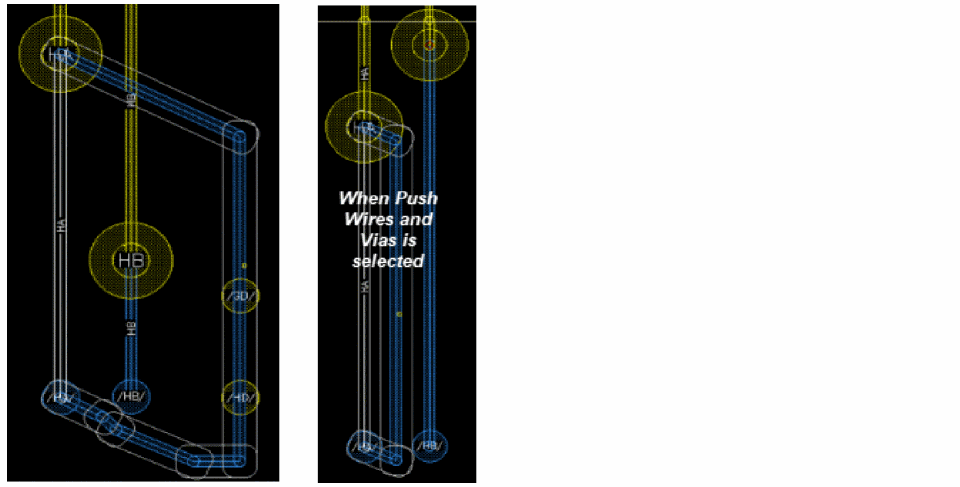 -
Click Smooth Wires to remove unnecessary jogs and loops that might be created while pushing the wire.
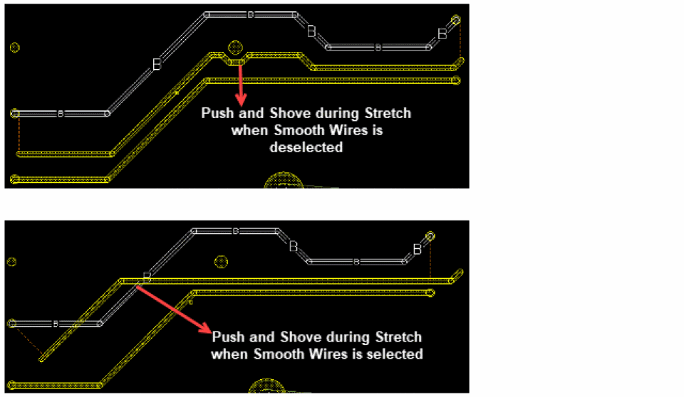 -
Choose Show Remaining Violations to view the violations that might be introduced while rerouting a wire. This option is selected by default.
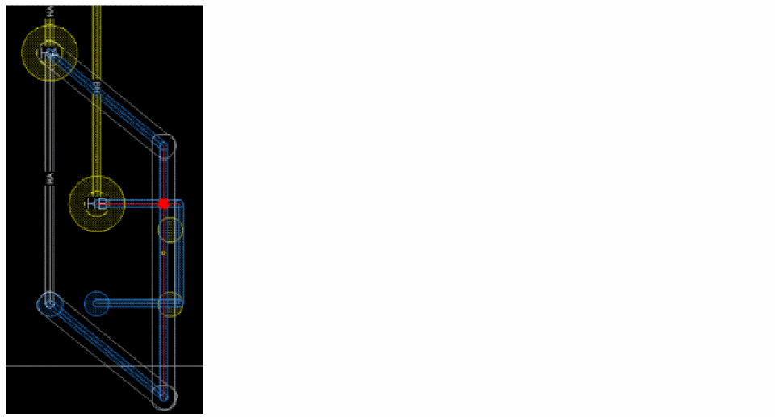
Support for Area-based Rules in the Push-and-Shove Feature
The wires that are created and edited using the push-and-shove feature supports the area-based rules and are sized and spaced accordingly. The push-and-shove feature in interactive routing supports the minWidth, maxWidth, and minSpacing area-based rules. For more information, see
The following figure shows how a geometric wire starts from a die pin and crosses different regions. In this case, when the wire spans across regions, the wire is split and pushing and shoving adjusts the wire width by avoiding the nearby objects and respects the minWidth, maxWidth, and minSpacing constraint values defined for each region.
Support for Shielding Constraints in the Push-and-Shove Feature
The push-and-shove feature supports shielding constraints that are defined in the technology file. It supports the shield spacing and width constraints and update the shielding of modified wires and vias.
Related Topics
Return to top